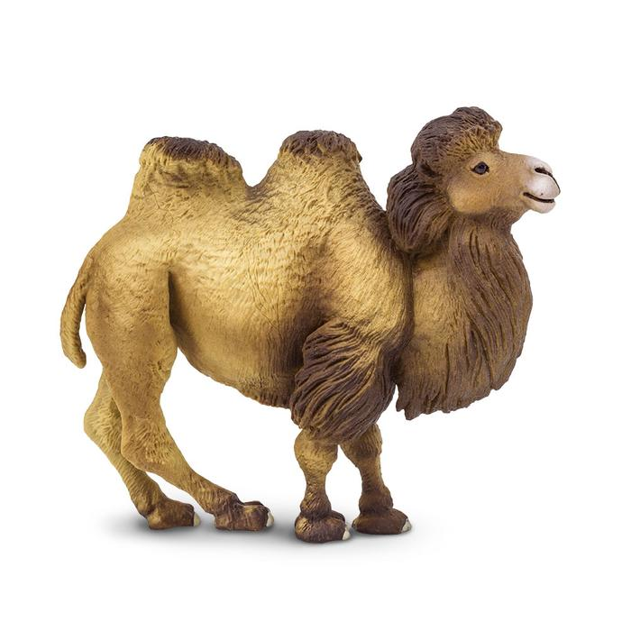

The four llamas and two camels are camlids tends too be large and are strictly behaviourous.Camelids differ from ruminants in sevral ways. They have a three chembered rather than the four chembereddigestive tract:an upper lipthat is split in two with each part separatly mobile,and an isolated incisor in the upper jaws.they have long legs that beacause they lanktensor skin to bridge between high and body,look longer still
| A table Compairing Camels And Lamals | |||||||
|---|---|---|---|---|---|---|---|
|  | Camelid Comparision |
||||||
| # of Humps | indigenious region | splits? | product Wool? | ||||
| camels | 2 | Africa/Asia | Llama | Llama | |||
| lamels | 1 | Andes mountain | |||||